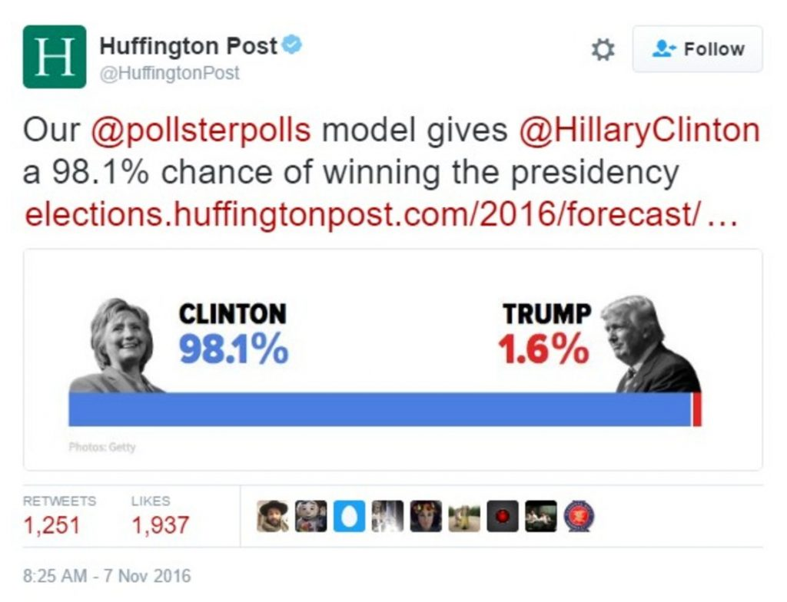
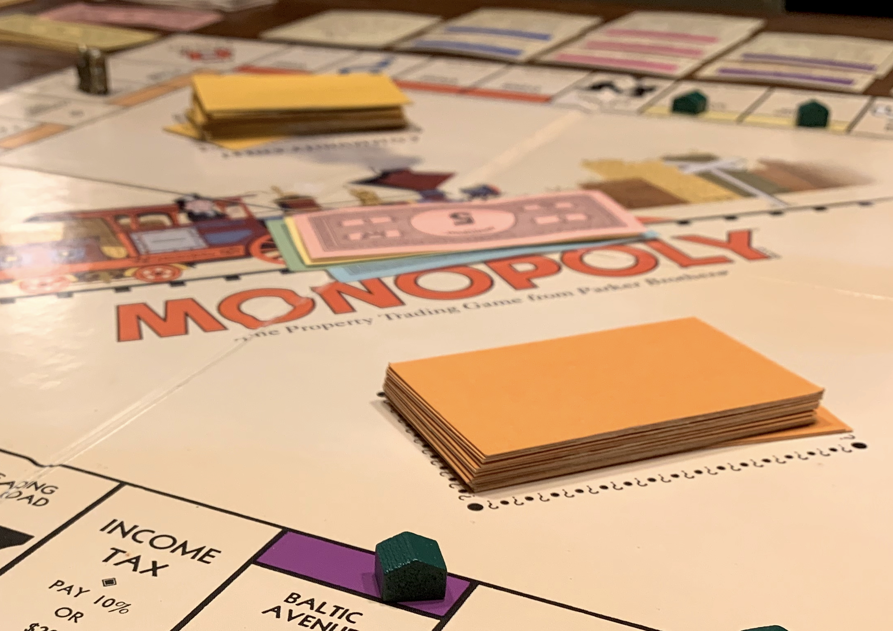
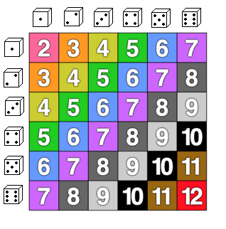
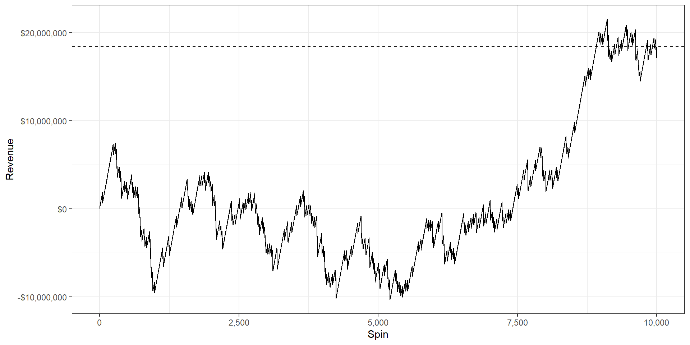
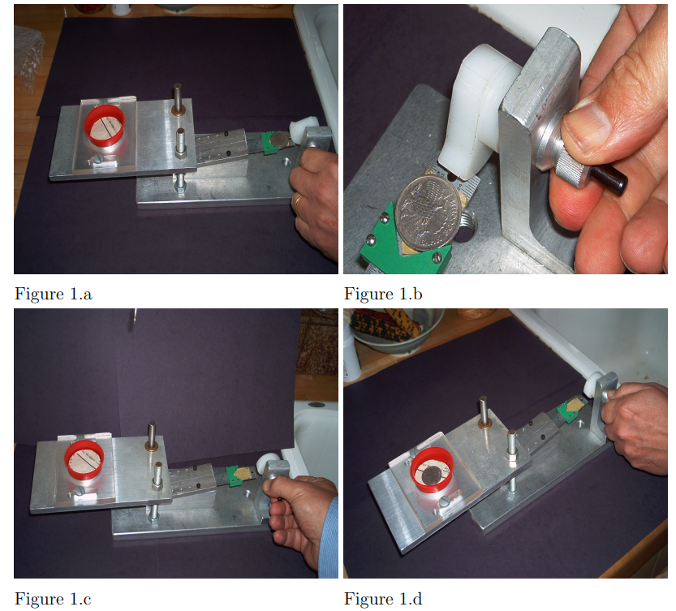
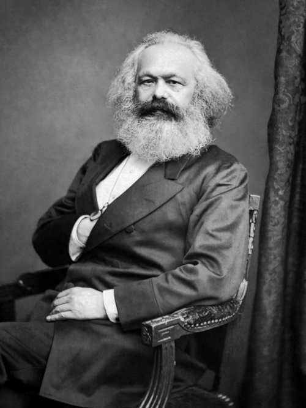
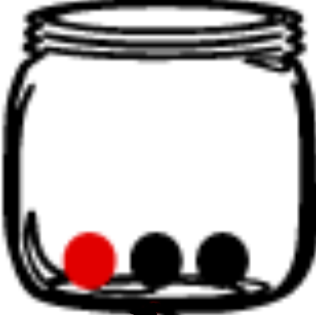

Fudamentals of Probability
POLS 3220: How to Predict the Future
Prediction Is Hard
“Stocks have reached what looks like a permanently high plateau.”
—Irving Fisher, Economist, October 1929
Prediction Is Hard
“I believe it is peace for our time.”
—Neville Chamberlain, September 30, 1938
Prediction Is Hard
“There’s no chance that the iPhone is going to get any significant market share. No chance.”
—Steve Ballmer, Microsoft CEO, 2007
Prediction Is Hard
Prediction Is Hard
“The overall risk to the American public does remain low.”
—CDC Director Robert Redfield, March 6, 2020
Prediction Is Hard
Prediction Is Hard
- Predictions guide important decisions—in politics, public policy, business, and daily life.
- Overconfidence and neglect of uncertainty can have serious consequences.
- The future is inherently uncertain—we need better ways to think about and communicate uncertainty.
Probability
Probability
The language of uncertainty
Allows us to communicate clearly and precisely how certain we are that an event will happen.
Probability
In some contexts, probability statements seem natural:
- 40% chance of rain on Tuesday
- 12% chance the Dodgers win the World Series
- 2.7% chance of rolling double sixes
In other contexts, feels weird:
“I believe there is 42% chance of peace in our time!”
-Neville Chamberlain, September 30, 1938
(My goal is to get you comfortable with such statements.)
Definitions
A probability is a number between 0 and 1 that expresses how likely it is that an event will happen.
- 0% means “impossible”
- 50% means “equally likely to happen or not”
- 100% means “certain”
Developing an intuition for other probability values is trickier…
Definitions
- Many of us develop an intuition for probability by playing games of chance.


Definitions
If you flip a coin 200 times, you’d expect it to come up heads roughly half the time.
This illustrates the frequentist interpretation of probability:
- Probability = how frequently we expect an event to occur in a large number of repeated trials.
Formalized in the Law of Large Numbers:
- If the probability of an event is \(p\), then the proportion of times that event occurs will approach \(p\) in a (very) large number of repeated trials.
Law of Large Numbers
The entire business model of casinos/lotteries rests on the Law of Large Numbers.
Maybe this guy comes in one night and puts $35,000 on lucky number 32. If 32 hits, the casino pays out over $1.2 million!
Law of Large Numbers
But if you get 10,000 of those guys placing bets like that, 37 lose for every 1 that wins…
Definitions
Sometimes it will be useful to express probability as odds.
- 50% \(\rightarrow\) 1:1 (“equally likely to happen or not”)
- 75% \(\rightarrow\) 3:1 (“three times more likely to happen than not”)
- 10% \(\rightarrow\) 1:9 (“nine times less likely to happen than not”)
To convert probability \(p\) to odds, divide \(\frac{p}{1-p}\).
To convert odds \(p:q\) to probability, divide \(\frac{p}{p+q}\).
Practice Problems
- What is 80% expressed as odds?
- What is 2:1 expressed as a probability?
What if the event can’t be repeated?
For events that can be repeated a large number of times, frequentist interpretation is pretty intuitive.
- But what about the sorts of questions I asked in the intro survey?

Subjective (Bayesian) Interpretation
Probability is not an innate characteristic of the event, but a statement about the observer’s knowledge.
Subjective (Bayesian) Interpretation
If you can precisely measure a coin’s initial velocity and rate of spin, you can perfectly predict what side it will land on (Diaconis et al. 2007).
Subjective (Bayesian) Interpretation
Probability is not an innate characteristic of the event, but a statement about the observer’s knowledge.
- Probability = “degree of belief”
- A probability statement (e.g. 80% chance of rain) communicates the forecaster’s confidence that the event will occur.
- “Based on the information I have, I think it is four times more likely to rain than to not rain.”
Are people good at this?
No. Assessing probability is not something that comes naturally to people.


Mental Trick to Improve Calibration
Reframe the problem as a bet.
“Would I rather have $100 if Karl Marx was born before Queen Victoria or if I draw a red ball from this jar?”
Alter the contents of the jar until you’re indifferent between the two bets.
This is called the Equivalent Bet Test (Spetzler & Staël Von Holstein, 1975; Galef, 2021)
 
Practice
Take 10 minutes to play “Two Truths and a Lie” with your tablemates. Pick a person to tell two truths and a lie about themselves, and everyone else must guess which is the lie.
Our twist on the game is that everyone must estimate a probability that their chosen statement is a lie. Use the Equivalent Bet Test to help calibrate your probability.
(Feel free to play multiple rounds if there is time remaining.)